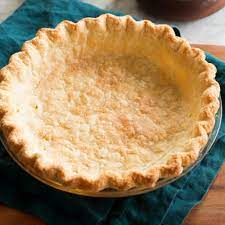

Ingredients
3 cups all-purpose flour
2 sticks unsalted butter, sliced, frozen
1 teaspoon kosher salt
7 tablespoons ice-cold water, or as needed
2 teaspoons distilled white vinegar
Return to the main page